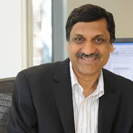
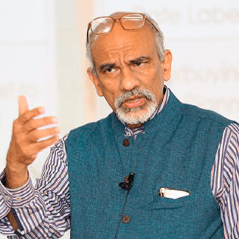
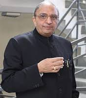
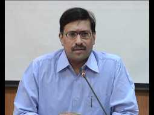

Dr. Anil Sahasrabudhe is the present chairman of All India Council for Technical Education (AICTE).He graduated from BVB College of Engineering and Technology, Hubli under Karnataka University with a Bachelor’s degree in Mechanical Engineering and was a gold medalist. Thereafter, he obtained a Masters and Doctorate from Indian Institute of Science, Bangalore.Prior to joining College of Engineering, Pune (CoEP), he was a member of faculty at IIT Guwahati for 11 years.[3] He was also a lecturer at NERIST, Itanagar. He served as the director of CoEP from 2005-2015. Presently, he is the chairman of AICTE.

Anant Agarwal is the CEO of edX, an online learning destination founded by Harvard and MIT. Anant taught the first edX course on circuits and electronics from MIT, which drew 155,000 students from 162 countries. He has served as the director of CSAIL, MIT’s Computer Science and Artificial Intelligence Laboratory, and is a professor of electrical engineering and computer science at MIT. He is a successful serial entrepreneur, having co-founded several companies including Tilera Corporation, which created the Tile multicore processor, and Virtual Machine Works. Anant won the Maurice Wilkes prize for computer architecture, and MIT’s Smullin and Jamieson prizes for teaching. He holds a Guinness World Record for the largest microphone array, and is an author of the textbook “Foundations of Analog and Digital Electronic Circuits.” Scientific American selected his work on organic computing as one of 10 World- Changing Ideas in 2011, and he was named in Forbes’ list of top 15 education innovators in 2012.Anant, a pioneer in computer architecture, is a member of the National Academy of Engineering, a fellow of the American Academy of Arts and Sciences, and a fellow of the ACM. He hacks on WebSim, an online circuits laboratory, in his spare time. Anant holds a Ph.D. from Stanford and a bachelor’s from IIT Madras.

Prof. G. Raghuram has a PhD from Northwestern University, USA, a Postgraduate Diploma in Management (PGDM) from IIM Ahmedabad and a BTech degree from IIT Madras.He specializes in infrastructure and transport systems, and logistics and supply chain management. He conducts research on the railway, port, shipping, aviation and road sectors. He has published over 35 refereed papers in journals and written over 155 case studies. He has published six co-authored books. He was awarded the ‘MC Puri Memorial Award’ for contribution to Operational Research in India, 2016; ‘Academician of the Year’ by the Chartered Institute of Logistics and Transport in 2012, and ‘Lifetime Achievement Award’ for contribution to logistics and infrastructure by EXIM News in 2014.He is a Fellow of the Operational Research Society of India, and Chartered Institute of Logistics and Transport.
He has teaching experience at universities in India, USA, Canada, Yugoslavia, Singapore, Tanzania and UAE. Prof. Raghuram was a faculty at IIM Ahmedabad (IIMA) since 1985. He was Dean (Faculty), IIMA from September 2013 to December 2015. He was the Vice-Chancellor of the Indian Maritime University from July 2012 to March 2013. He was the Indian Railways Chair Professor from January 2008 to August 2010. Prior to taking over as Director of IIM Bangalore, he was Professor and Chairperson of the Public Systems Group at IIMA.
He is a member of the Global Future Council on Mobility of the World Economic Forum, Executive Council of the National Aviation University, and of the Board of Directors of six companies in the fields of infrastructure, logistics and education. Overall, he has been on the Board of 12 companies. He has offered consultancy services to over 100 organizations including multilateral agencies. He has served on various government policy making and advisory committees for the Ministry of Civil Aviation, Ministry of Consumer Affairs and Public Distribution, Ministry of Railways, Ministry of Road Transport and Highways, Ministry of Shipping, Cabinet Secretariat, Comptroller and Auditor General, the Planning Commission and various State Governments.

Deepak B. Phatak is an Indian computer scientist and academic.He is known for his notable work for upgrading Aakash, advertised by its manufacturer as the ‘world’s cheapest tablet’.In 2009, he was ranked one of the 50 most powerful people in India.Dr. Deepak B Phatak has been working with IIT Bombay since 1971. His main concern is improvement in quality of education, at a large scale commensurate with the Indian national aspirations. Towards this end, he has dovetailed the synchronous distance education, which he started at IIT Bombay 15 years ago, into an innovative program for training 10,000 teachers at a time. He has been an advisor and IT consultant to organizations and companies, and has worked on many company boards. He has won several distinctions and awards, and has been conferred ‘Padma Shri’ by Government of India in the year 2013.He has been an Open Source evangelist in India, and has pioneered several initiatives to popularize Free and Open Source Software usage. He believes that India should soon migrate from the status of a net taker from Open Source, to become a net giver to the Open Source community.His research interests are Data Bases and Information Systems, Software Engineering, System Performance Evaluation, IT enabled Education, and IT strategy planning. His primary research inclinations are in Technology application and deployment.

Shri.R Subrahmanyam is BA Economics from Madras Christian College, Chennai and MA. M Phil in International politics from JNU, New Delhi. He did MBA in International Business from Indian Institute of Foreign Trade and further studied MSc in macroeconomics from University of Bradford UK on Commonwealth Fellowship. Currently Shri.R Subrahmanyam , IAS (AP; 1985) is appointed as an Additional Secretary, Department of Higher Education, Ministry of Human Resources Development.Prior to this appointment, he was the Joint Secretary, Department of Rural Development, Ministry of Rural Development.